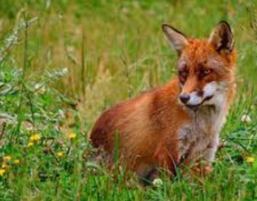
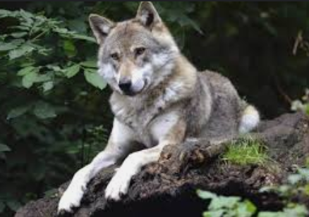
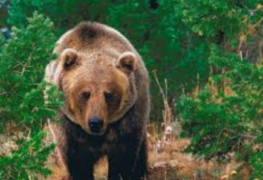
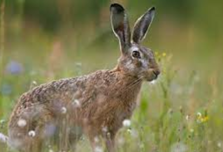
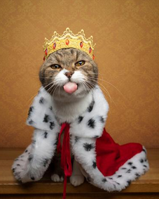

З ким гуляв кіт
Кіт-воркіт Котофей Котофейович
Українська народна казка Подніпров’я (Наддніпрянщини)
Край лісу під горою жили в хатці старий зі старою. Не було в них ні корови, ні свинки, ані якої скотинки, а був один кіт — кіт-воркіт Котофей Котофейович. І був отой кіт жадібний та ненажерливий. То сметанку злиже, то масло з’їсть, то молоко вип’є, наїсться, нап’ється, ляже в куточок та нявчить:
— Мало, мало, мені б оладочок та млинців, мені б маслених пирогів!
Ото старий терпів, терпів та й не витерпів. Узяв кота, відніс у ліс та кинув:
— Живи, Котофею Котофейовичу, як хочеш, іди куди знаєш!
А Котофейович у мох зарився, хвостом укрився та й спить собі. От день минув — Котофейовичу їсти схотілося. А в лісі ні сметанки, ні молока, ні млинців, ані пирогів.
 Пішов кіт-воркіт по лісі — спина дугою, хвіст трубою, вуса щіточкою. А назустріч йому Лисиця Патрикіївна.
— Ой, хто ж ти такий та з яких країн? Спина дугою, хвіст трубою, вуса щіточкою!
А кіт спину вигнув, та двічі пирхнув, та вуса настовбурчив.
— Хто я такий та з яких країв? З сибірських лісів, Котофей Котофейович.
— Ходімо, любий Котофею Котофейовичу, до мене, лисоньки, в гості.
— Ходімо.
Привела його лисичка до себе додому, в свої хороми. Почала його пригощати: вона йому шинки, вона йому дичинки, два горобчики. А він:
— Мало, мало, мені б оладочок та млинців, мені б масляних пирогів!
От лисиця й каже:
— Коте Котофейовичу, та як же мені тебе, такого ненажеру, нагодувати? Піду до сусідів по допомогу.
 Побігла лисиця лісом. А назустріч їй вовк.
— Добридень, кумонько-лисичко, куди біжиш, чому поспішаєш?
— Ой, не питай, не розпитуй мене, вовчику, бо ніколи мені.
— Скажи, кумонько, що тобі треба, може, я допоможу?
— Ох, вовчику-кумцю, приїхав до мене рідний братик з далеких країв, з сибірських лісів — Котофей Котофейович.
— А чи не можна, кумасю, подивитися на нього?
— Можна, вовчику, тільки він дуже сердитий. До нього без подарунка не підходь, враз шкуру здере.
— А я, кумонько, йому барана притягну.
— Барана йому мало! Ну та нехай вже так. Я його попрохаю, може, він до тебе й вийде.
 І побігла лисичка далі. От іде їй назустріч ведмідь.
— Добридень, лисичко, добридень, кумонько! Ти куди біжиш, чому поспішаєш?
— Ой, не питай, не розпитуй, Михайле Михайловичу, бо ніколи мені.
— Скажи, кумонько, що тобі треба, може, я допоможу.
— Ох, ведмедику, Михайле Михайловичу! Приїхав до мене рідний брат з далеких країв, з сибірських лісів — Котофей Котофейович.
— А чи не можна, кумонько, подивитись на нього?
— Можна, ведмедику, тільки він у мене дуже сердитий, хто не сподобається — одразу з’їсть. До нього без подарунка й не підходь.
— Я йому бика принесу.
— Отож! Тільки ж ти, ведмедику, бика під сосну, а сам на сосну, та тихо сиди. Бо він тебе з’їсть.
Лисичка хвостиком майнула, тільки її й бачили. От на другий день вовк та ведмідь притягли до лисиччиної хати подарунки — барана і бика. Поклали під сосну та й давай сперечатись.
— Іди, вовчище, сірий хвостище, кликати лисицю з братом! — каже ведмідь.
— Та ні вже, ведмедику, йди сам, ти ж більший та товстіший, тебе з’їсти важче.
 Один за одного ховаються, йти не хочуть. Коли це біжить зайчик Куций Хвіст. Ведмідь до нього:
— Стій!
Спинився зайчик. Сам тремтить, зубами цокотить, оком коситься.
— Іди, зайчику Куций Хвіст, до Лисиці Патрикіївни, скажи, що ми її з братом дожидаємо.
Зайчик і побіг. А вовк боїться, тремтить, скавчить:
— Михайле Михайловичу, заховай мене!
Ведмідь його в кущі й заховав. А сам на сосну заліз на самий вершечок. От лисиця двері розчинила, на поріг ступила та й гукає:
— Збирайтеся звірі лісові, великі та малі, подивіться, який гість із далеких країв, із сибірських лісів Котофей Котофейович!
Побачив його ведмідь та й шепоче вовкові:
— Тьху, яка звіринка, маленька та поганенька!
А кіт побачив м’ясо та як стрибне, як почне м’ясо рвати та нявчати:
— Мало, мало, мені б оладочок та млинців, мені б масляних пирогів!
Ведмідь аж затрусився від жаху:
— Ой лихо! Мале, та жадібне — бика йому замало! Хоч би мене не з’їв!
Сидить ведмідь, тремтить, аж сосна хитається. Схотілося і вовкові на невиданого звіра глянути. Заворушився під кущем, а кіт подумав, що то миша. Як кинеться, як стрибне, кігті випустив!
Вовк тікати! Кіт вовка побачив, злякався та плиг на сосну, а на сосні ведмідь.
«Біда, — думає ведмідь, — вовка з’їв, до мене добирається!»
Затремтів, затрусився та як гепнеться з дерева. А тоді навтьоки. А лисиця хвостиком крутить, їм услід кричить:
— Він ще вам покаже! Він ще вас з’їсть!
Отож з тої пори стали всі звірі кота боятися. Почали йому данину носити: хто сметанки, хто шинки, хто оладочок та млинців, а хто масляних пирогів. Так і став жити, лиха не знаючи, сірий кіт Котофей Котофейович!